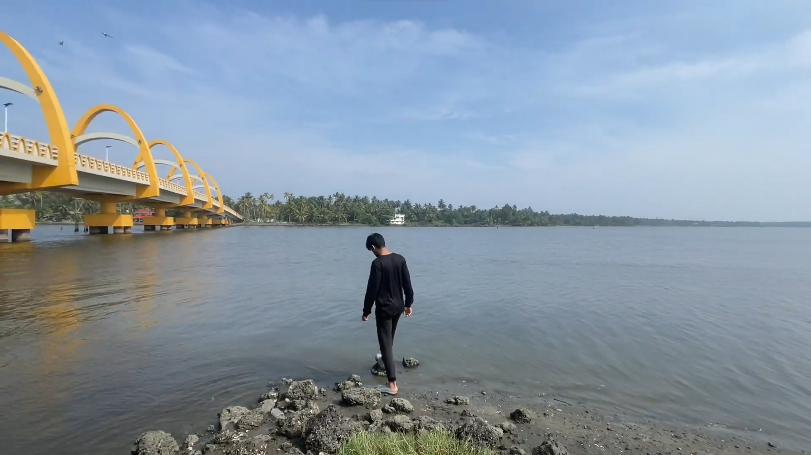
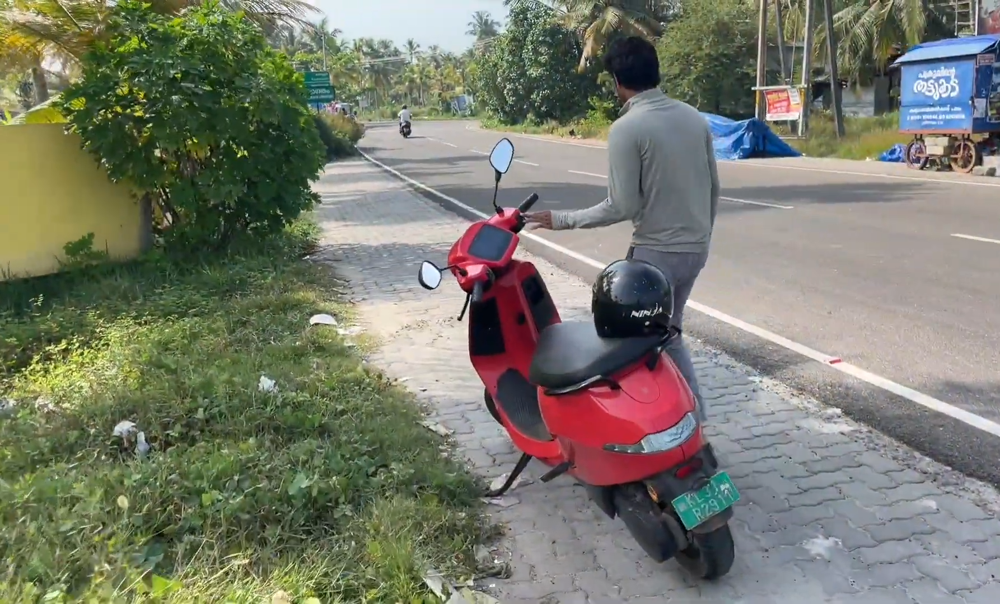
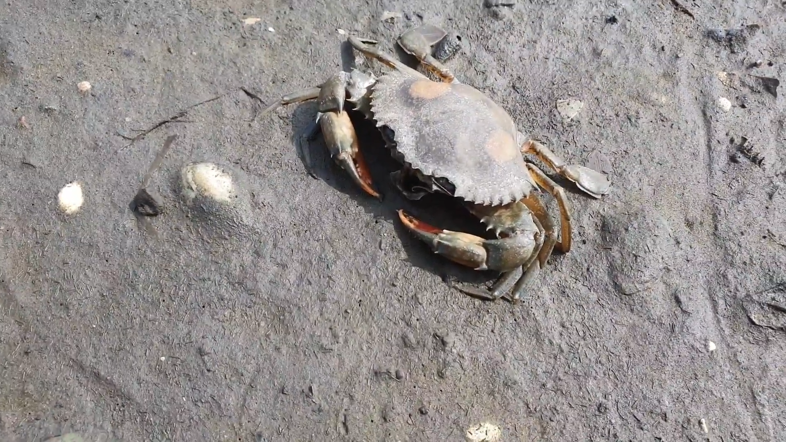
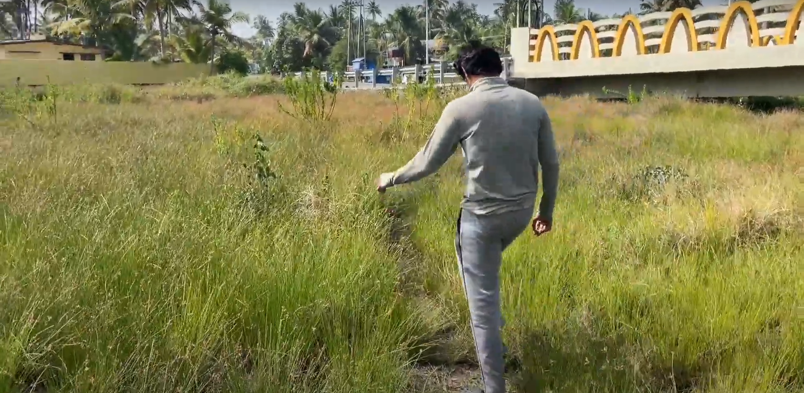
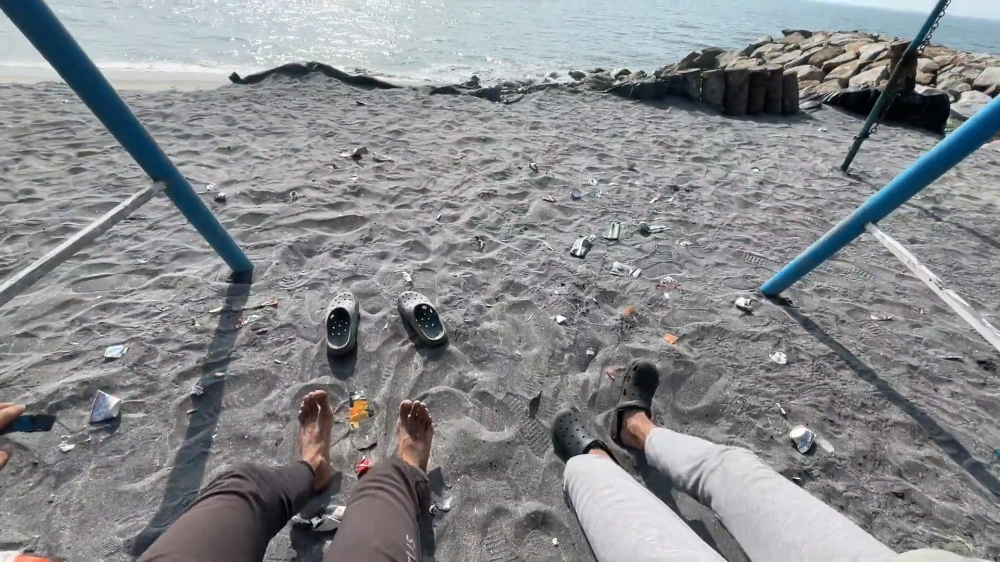

Our Trip to Azheekal Beach
Last weekend, my friend Aditya and I decided to take my Ola S1 Pro for a spin to Azheekal Beach. The weather was perfect, with a gentle breeze and clear skies, making it an ideal day for a ride. We started our journey early in the morning to avoid the midday heat and traffic.
|  |  |
Stop at Bridge
As we cruised along the coastal roads, the cool breeze and the sound of the waves crashing against the shore created a serene atmosphere. Our first stop was at Lovely Beach, a small yet picturesque spot that we stumbled upon by chance. The beach was almost deserted, giving us the perfect opportunity to enjoy the tranquility. While walking along the shore, we spotted a dead crab, which was a bit of a surprise. We took a moment to observe it and then continued our walk, taking in the beauty of the beach.
|  |  |
Charging Station Break
After spending some time at Lovely Beach, we continued our journey towards Azheekal Beach. On the way, we decided to take a break at a nearby charging station to ensure our Ola S1 Pro was fully charged for the rest of the trip. The charging station was conveniently located near a small park with a swing set. We couldn’t resist the temptation to sit on the swings and enjoy the view of the beach. It was a nostalgic moment, reminding us of our childhood days. Once the scooter was fully charged, we resumed our journey. The ride to Azheekal Beach was smooth and enjoyable, with the scenic coastal views keeping us company. Upon reaching Azheekal Beach, we were greeted by the sight of golden sands and azure waters. The beach was bustling with activity, with families and groups of friends enjoying their day out.
 |
 |
Joy Riding
We parked the scooter and decided to explore the beach. We walked along the shoreline, feeling the soft sand beneath our feet and the cool water lapping at our ankles. We found a nice spot to sit and relax, watching the waves and the distant horizon. The sound of the ocean was soothing, and we spent some time just soaking in the peaceful ambiance. As the day progressed, we decided to grab some snacks from a nearby vendor. We enjoyed some delicious local delicacies while chatting and laughing about our adventures so far. The food was a perfect complement to the beautiful setting, making the experience even more memorable.